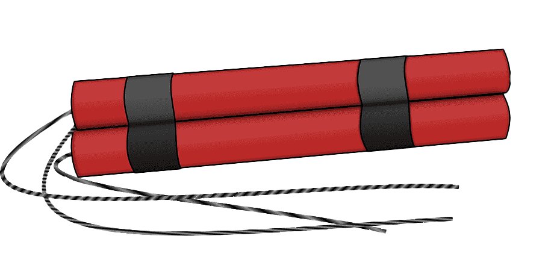

[You keep walking down the left path until you spot something from the corner of you eye]
"Is that?"
[You pick up a piece of dynamite from the ground]
Maybe I could use this to get out!
[You light up the piece of dynamite and take cover]
*pssst*
*BOOM!*
*spit*
[The dynamite exploded, upsetting kirby's stomach and spitting you out]
You survived!